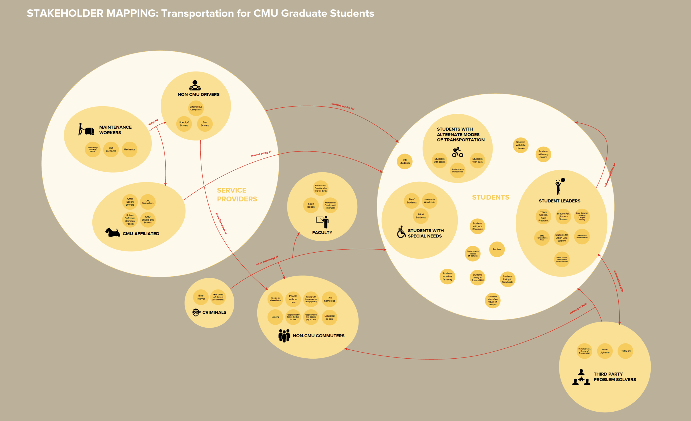
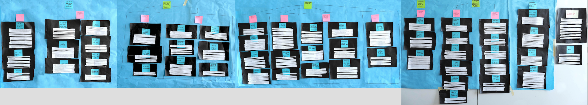
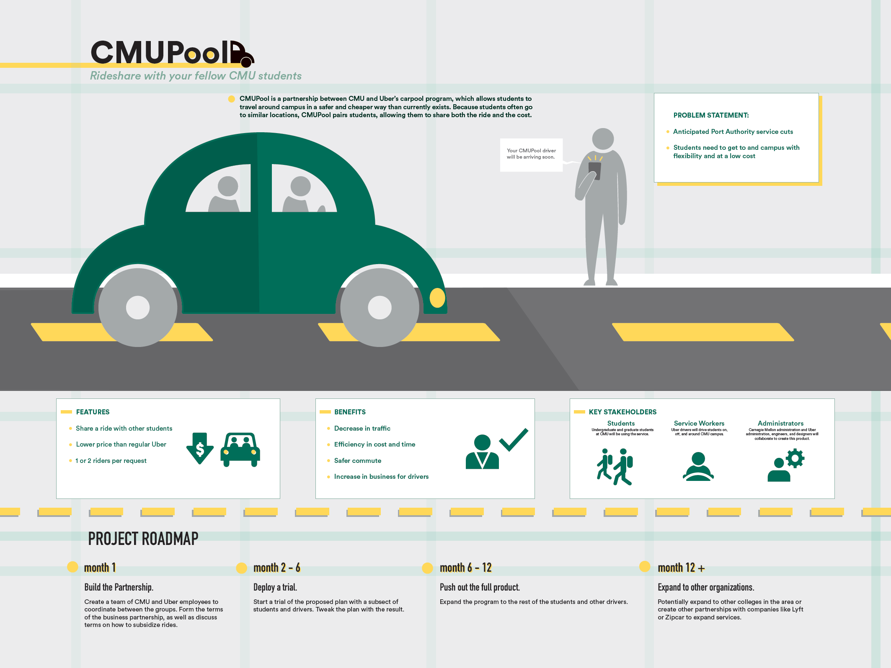

Skills: UX Research (Stakeholder Mapping, Contextual Inquiry)
05-410: User-Centered Research and Evaluation
January 2018 - March 2018
With my team, I conducted intensive design research using the contextual inquiry process to understand the needs and frustrations of Carnegie Mellon students in regards to their commuting experiences in Pittsburgh. Our final design solution, CMUPool, is to create a partnership between Carnegie Mellon University and Uber to offer shared Uber rides for students, allowing for more time and cost efficient commutes.
We were presented with the problem of how to improve the mobility of the CMU community and the task to develop strategies to mitigate the impact of anticipated service cuts of the public Pittsburgh bus system. Our main focus was the graduate students, as they are required to live off campus, and many live in further areas in Pittsburgh. We worked with the task force partners involved in this transportation initiative and other users and stakeholders to understand the problem space. Interpreting the data was just as, if not more, important than collecting them. We used various research methods, including stakeholder mapping, interviewing, sequence and day-in-the-life modeling, affinity diagramming, and visioning to design an effective and feasible solution to provide CMU students and faculty with better commuting experiences in Pittsburgh.
Stakeholder Mapping
We started off by creating a stakeholder map to visualize the breadth of key people in this problem space and begin to understand their mindsets. In order to create a guide for the next phases of our research process, we categorized the different groups of stakeholders into higher level groupings and connected them with how they impact or relate to each other.
Interviewing and Interpretating
After writing our interview protocol and reaching out to stakeholders and users in the transportation problem space, we conducted six interviews. Following these interviews, we coded each of them and created sequence models and day-in-the-life models for them. The sequence models show the activities that each participant carried out for specific triggers related to his/ her commute, with intents and strategies as well as breakdowns. The day-in-the-life models walk you through a typical day of each participant, emphasizing the location, time, and devices used. A couple of examples are shown below.
Affinity Diagramming
To create the big picture and uncover themes and issues across all users, we summarized our interviews in a way that told a story with our field data. We clustered each interview note into specific groupings in the language of the user (blue post-its), specific issues (pink post-its), and whole areas of concerns (green post-its).
Model Consolidation
To capture similarities across all our participants, we consolidated all the individual sequence models into one and did the same for the day-in-the-life models as well. We aimed to show common patterns among all the users without losing key variations across them.
Visioning and Storyboarding
To begin forming our design solution, we reviewed all the research findings and models by "walking the wall". We looked over the affinity diagram and consolidated models and listed design ideas, breakdowns, and questions found in them. In addition, we conducted a second "walk the wall" session using the "Rose, Thorn, Bud" method in which we noted any positive features (rose), breakpoints (thorn), or aspects that have potential (bud). We then moved on to visioning sessions, in which we generated potential solutions for various use cases based on the lists we generated earlier. We created six visions, each focusing on a different potential user need or situation. Lastly, we selected three ideas and created a storyboard for each solution. We also speed-dated all three storyboards with some of our interviewers and other potential users to gather feedback.
We decided that our idea of establishing a shared Uber or Lyft riding system for CMU students was the most effective and feasible solution based on the feedback we received from speed-dating the three storyboards.
Overall, this project exposed me to conducting thorough design research using the contextual inquiry process, sparking my interest in design research and research analysis. Although each step of the process was time-consuming and at times frustrating when we got stuck, I firmly believe that every part was crucial and built on top of each other leading to the final solution. My biggest takeaway from this project would be how to balance precision and flexibility when working with the data at hand to fit the contextual inquiry guidelines and rules. As the project manager for my team, I also strengthened my leadership, teamwork, and communication skills.